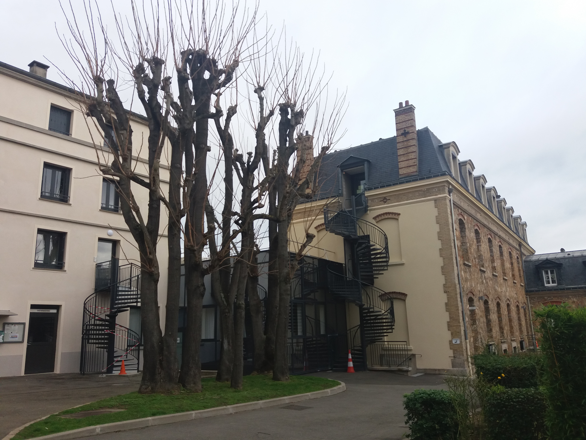
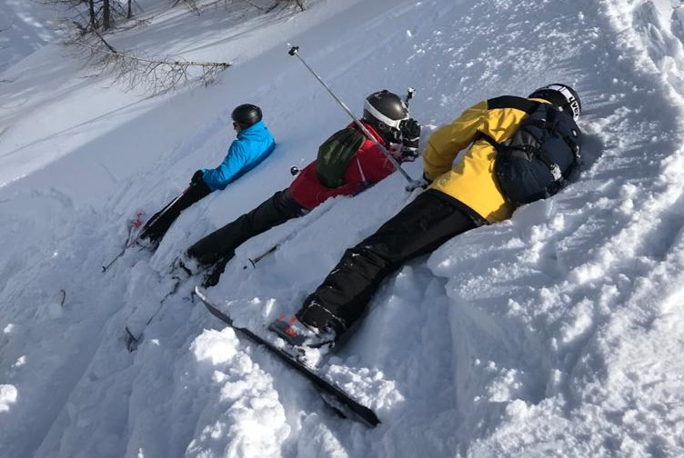
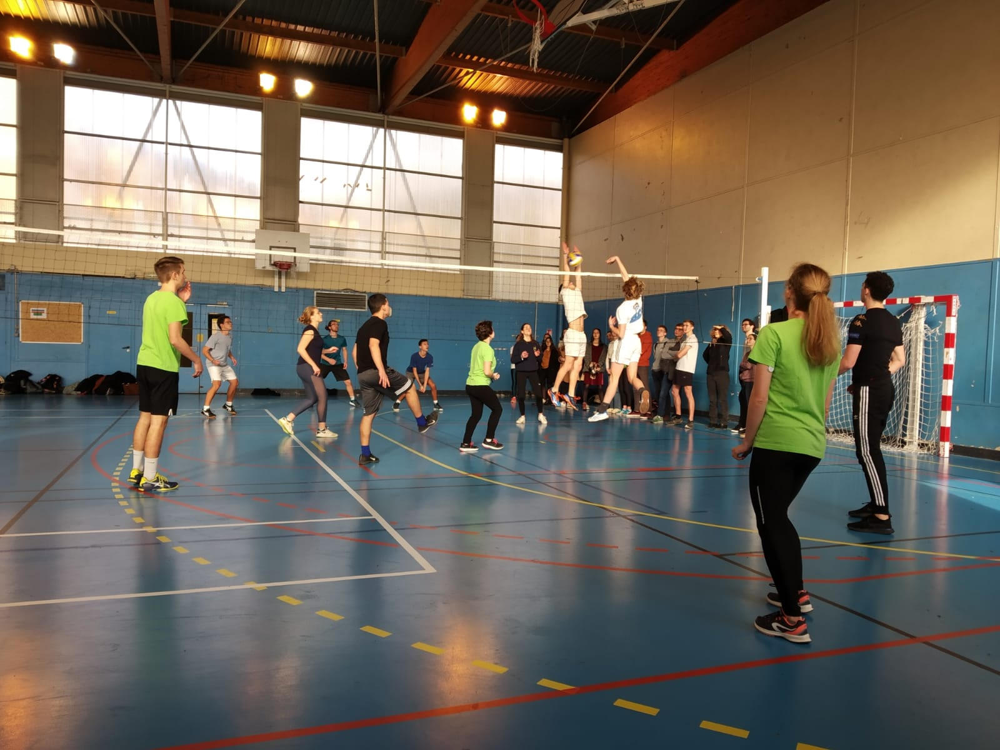
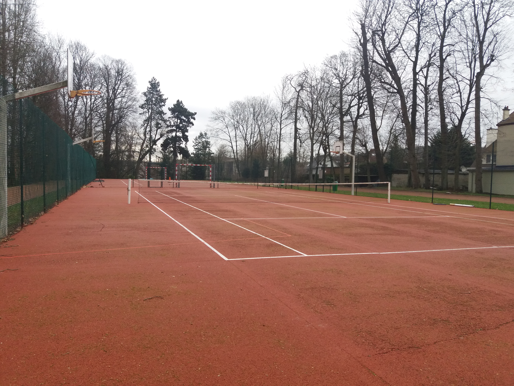

Cher visiteur, bonjour,
tu te demandes sûrement à quoi ressemble la vie à Ginette.
Il est malheureusement impossible d'en donner une description exhaustive tellement celle-ci est intense.
En voici donc (comme dirait le prof de Maths) une "approche informelle".
7h00 pour les plus motivés (de plus en plus rares), 7h30 pour les moins motivés, et 8h00 pour les marmottes : l’heure du réveil. Tu t’extirpes de ton lit et te diriges vers le ref pour prendre ton petit-déjeuner –pain frais, yaourt, jus… - avec tes camarades.
8h10 : Tu arrives en avance en cours pour ne pas rater la délicieuse contrepèterie d’Hélie, la blague du jour de Jules (lorsqu’il daigne en écrire une), les dernières actualités sportives de Martin, et, bien sûr, le RDB de Baptiste (que tu auras peut-être la chance de connaître si tu participes à l’aventure Ginette !)
8h15 : C’est le début des cours, et gare à ceux qui arrivent en retard ! C’est parti pour deux heures de mathématiques intensives, durant lesquelles tu démontreras TOUT. Mais, ne t’en fais pas, tu ne verras pas les heures passer… ou presque.
10h15 : C’est la récré. Tu vas sur le Pratzen (tu verras…) et tu pars à la recherche de Quentin, ton bien-aimé CD Pomme. CD Pomme, c’est un CD très important, si ce n’est LE plus important. Sans ton CD Pomme, tu serais incapable de tenir toute la matinée. Le CD Pomme, c’est celui qui, chaque jour, va chercher des pommes et du pain au ref pour en rapporter à ses camarades. Un CD à ne pas prendre à la légère !!
10h30 : Tu reprends les cours : c’est parti pour 2 heures de physique non-stop, durant lesquelles tu auras le temps de démontrer 50 formules, de faire 20 exos, de faire en plus du HP (Hors-Programme), et d’étudier une formule obscure -juste parce qu’elle tombée au concours Polytechnique en l’an 1450. Heureusement, François est là pour poser des questions et que l’on souffle un peu.
12h30 : L’heure du déjeuner. On se retrouve tous au réf où de bons petits plats nous attendent. Pas de queue ni d’attente : tout le monde mange en même temps!
13h00 : Particularité de Ginette, tous les préparationnaires disposent d’une heure de temps libre le midi. Certains vont siester, d’autres vont faire une activité extra-scolaire (théâtre, orchestre)… Le mieux, c’est d’admirer les beaux Bjiens en short jouer au rugby.
14h00 : Reprise des cours : c’est tipar pour deux heures de Français, une matière à ne surtout pas négliger ! De toute façon, tu apprécieras très vite ce cours qui te donne l’impression d’enfin tout comprendre !
16h00 : fin des cours ! Tu te diriges vers ta piaule de jour, où tu prends ton goûter et où tu fais la causette avec tes cos. Puis, tu entames… la pougne ! (en respectant bien ton planning, car tu suis les conseils avisés de PDG –tu verras…).
18h00 : tu vas à la colle de maths que t’as donnée ton cher CDT, en espérant avoir un intégré comme colleur.
19h00 : tu retournes à ta piaule, et tu peux te plaindre de ta colle trop dure à tes cos. Ceux-ci te prêteront toujours une oreille attentive !
20h00 : l’heure du dîner ! Un nouveau moment convivial avec toute ta classe, les pistons II, et les spés. L’occasion de se détruire les tympans, de rire et de faire du bruit. Peut-être même qu’un ragal ponctuera ce repas… Cupidon a-t-il encore frappé à la BJ ? (tu verras…)
20h30 : Devant le réf, tu papotes avec d’autres P3 – l’occasion de se changer les idées avant de pougner sur les fonctions bijectives.
21h00 : L’heure du travail a sonné, et voici déjà Moustachu et ses sbires qui viennent te sermonner : c’est l’heure de la pougne, et «ce n’est pas en bavardant qu’[on] intègrera ! ».
22h45 : Cette fois-ci, c’est l’heure du repos qui a sonné ! Si tu es un garçon, tu restes dans ta chambre, et si tu es une fille, tu te diriges vers ta piaule de nuit, où tu retrouves ta co de nuit, à qui tu peux raconter les derniers potins et ta vie sentimentale.
23h00 en théorie, 23h15 en pratique : c’est l’extinction des feux. Tu peux sombrer dans les bras de Morphée, après une journée bien remplie !
L'internat
L’internat de Ginette, c’est notre deuxième maison et peut-être bientôt la tienne futur Sup. Il est immense et tous les élèves ont la chance de pouvoir y être logés.
Même si la prépa y impose une atmosphère assez studieuse, l’internat reste un endroit de partage qui vit dans les traditions de Ginette. De plus, il permet de favoriser la mixité car garçons et filles y cohabitent le jour.
En effet, les chambres des garçons sont équipées de 2 lits et de 3 bureaux (une fille peut donc venir y travailler en journée).
Bien sûr, les jeunes et jolies demoiselles retournent dans leurs forteresses avant 23h, heure à laquelle nos très gentils surveillants passent pour nous souhaiter de passer une agréable nuit.
Puisque toutes les bonnes choses ont une fin, deux changements de chambre sont organisés dans l’année.
Nous quittons également nos « piaules » pendant les vacances pour profiter d’un repos bien mérité.
Notre Dame

Elisabeth et SFR
Le Sport à Ginette
Parmi l'infinité de traditions de Ginette, nombreuses sont celles qui concernent le sport.
Le jeudi après-midi est un moment privilégié pour le pratiquer et les nombreuses équipes de rugby, de foot, de hand… seront ravi de t’accueillir.
Aux amateurs de footing, un immense parc permet de se dégourdir les jambes (le matin pour les uns, après les cours pour d’autres, jamais pour certains…).
Une salle de musculation-fitness est également à disposition des élèves 24h/24 et le gymnase est accessible pour un moment de partage entre amis le samedi soir après le redoutable devoir surveillé.
Enfin, quelques événements sportifs comme le légendaire match Ginette-Hoche rythment l’année scolaire et font vivre la merveilleuse ambiance de la BJ.

Ski

Volley

Tennis
Le jeudi après-midi
Comme tu l’as peut-être déjà remarqué futur Sup, il n’y a pas de cours le jeudi après-midi.
Certains diront que c’est nécessaire après les 3 heures de maths du matin mais ça, tu le comprendras bien assez tôt…
Même si bien sûr la pougne a sa place le jeudi comme n’importe quel autre jour de la semaine, c’est aussi un moment pour se retrouver, faire du sport, de la musique, ou se détendre tout simplement.
Des AS (activités sociales) sont également proposées pour donner des cours de soutien à des jeunes plus en difficulté ou encore visiter des personnes âgées.
Ne t’inquiète donc pas futur Sup, ton emploi du temps sera bien rempli même quand il n’y a pas cours.
Petite particularité en Piston 3, le jeudi est également le jour du dard mais ça : Tu verras…